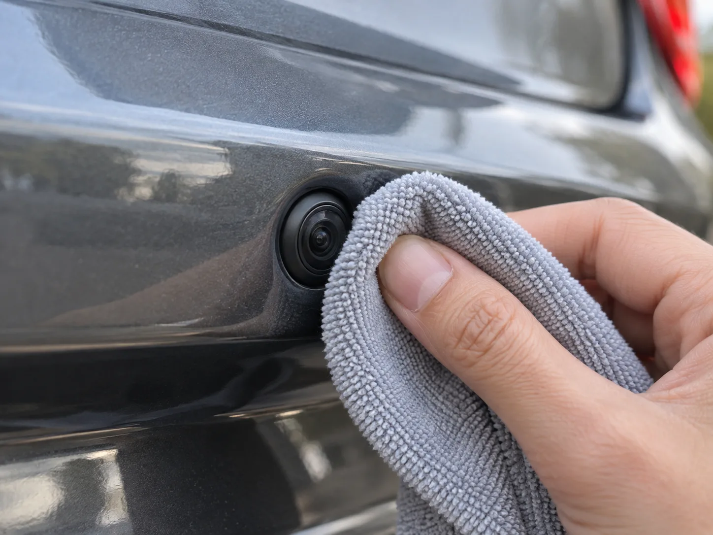
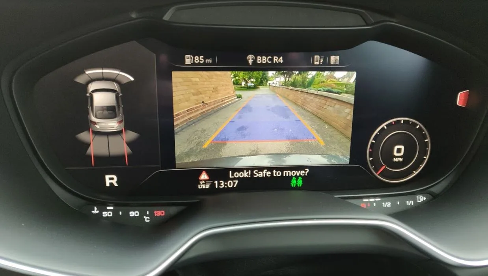
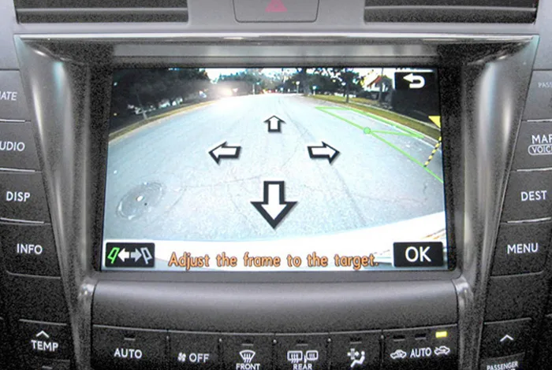

▲ 후방카메라 렌즈는 범퍼 하단부에 위치해 흙탕물과 이물질에 그대로 노출된다 ⓒ CarPrism (AI 생성 이미지)
주차하려고 기어를 R에 놓았는데, 화면이 온통 뿌옇게 흐리거나 빗물 자국처럼 얼룩져 나온다면? 십중팔구 카메라가 고장 난 게 아니라 렌즈 표면이 오염된 것이다.
후방카메라는 범퍼나 트렁크 손잡이, 번호판 주변 등 차량에서 가장 낮고 노출이 심한 위치에 달려 있다. 흙탕물, 눈, 벌레 사체, 배기가스 그을음까지 그대로 맞다 보니 다른 어떤 센서보다 빨리, 자주 더러워진다. 문제는 이걸 고장으로 오해해 바로 정비소부터 찾거나, 반대로 거친 세제로 대충 문질러 닦다가 코팅을 더 망가뜨리는 경우가 많다는 점이다.
1. 후방카메라 렌즈, 왜 이렇게 자주 더러워질까
후방카메라는 차량 구조상 가장 낮고 지저분해지기 쉬운 자리에 달린다. 범퍼 하단이나 트렁크 손잡이, 번호판 등 바닥에서 튀는 흙탕물과 도로 위 이물질이 직접 닿는 위치다.
▲ 후방카메라 렌즈는 범퍼 하단부에 위치해 흙탕물과 이물질에 그대로 노출된다 ⓒ CarPrism (AI 생성 이미지)
| 원인 | 내용 |
|---|---|
| 흙탕물·진흙 | 비 오는 날 도로 주행, 비포장길 주차 시 바퀴가 튕겨낸 흙탕물이 직접 튐 |
| 눈·염화칼슘 | 겨울철 제설 작업으로 뿌려진 염화칼슘 성분이 눈과 함께 튀어 하얗게 말라붙음 |
| 벌레·나뭇진 | 여름철 벌레 사체나 끈적한 나뭇진이 렌즈 표면에 눌어붙어 잘 지워지지 않음 |
| 배기가스·매연 | 정체 구간에서 뒤차 배기가스의 그을음이 미세하게 렌즈에 쌓임 |
| 세차 잔여물 | 세차 후 왁스·코팅제가 렌즈 표면에 얇게 남아 뿌옇게 보이는 경우도 있음 |
또한 렌즈 커버 대부분은 폴리카보네이트(플라스틱) 소재인데, 오랜 시간 자외선에 노출되면 표면 보호 코팅이 산화되면서 뿌옇게 변하는 '백화 현상'이 나타나기도 한다. 이 경우는 단순히 닦아낸다고 해결되지 않는, 별도의 복원 작업이 필요한 문제다.
2. 올바른 청소법 — 부드럽게, 마찰 없이
렌즈는 작고 얇은 만큼 세게 문지르면 오히려 흠집이 나거나 코팅이 벗겨질 수 있다. 순서를 지켜 부드럽게 닦아내는 것이 핵심이다.
✅ 후방카메라 렌즈 청소 순서
· 1단계 — 마른 이물질 먼저 털어내기: 부드러운 브러시나 압축 공기로 흙먼지 알갱이를 먼저 제거해 문지를 때 스크래치가 나지 않도록 함
· 2단계 — 극세사 천에 세정액 소량 적시기: 이소프로필 알코올(소독용 알코올)이나 렌즈 전용 클리너를 극세사 천에 살짝 묻힘
· 3단계 — 원을 그리듯 부드럽게 닦기: 렌즈 표면을 작은 원을 그리며 가볍게 닦아냄, 힘을 주지 않는 것이 중요
· 4단계 — 마른 천으로 물기 제거: 물 얼룩이 남지 않도록 마른 극세사 천으로 마무리
· 찌든 얼룩은 이소프로필 알코올과 증류수를 1:1로 섞은 용액을 사용하면 더 효과적

▲ 렌즈 청소는 세게 문지르기보다 극세사 천으로 부드럽게 닦아내는 것이 원칙이다 ⓒ CarPrism (AI 생성 이미지)
📍 이렇게는 절대 하지 말 것
· 아세톤이 포함된 세정제는 렌즈 보호 코팅을 부식시킬 수 있어 피해야 한다
· 세정액을 렌즈에 직접 분사하면 액체가 카메라 하우징 틈으로 스며들어 내부 전자 부품을 손상시킬 위험이 있다 — 반드시 천에 먼저 묻힌 뒤 닦을 것
· 고압 세차기로 렌즈나 카메라 하우징을 직접 겨냥하는 것도 금물이다 — 신차라도 방수 씰이 손상돼 빗물이 스며들 수 있다
· 마른 휴지나 거친 극세사가 아닌 일반 천으로 문지르면 미세 스크래치가 생겨 오히려 화질이 나빠질 수 있다
후방카메라 백화 현상이 심할 때의 복원 방법은 아래에서 더 자세히 확인할 수 있다. 후방카메라 렌즈 복원법 바로가기
3. 화면이 흐리거나 안 나올 때 — 원인부터 구분하자
화면 이상 증상은 크게 세 가지 원인으로 나뉜다. 무작정 정비소에 맡기기 전에 아래 기준으로 대략적인 원인을 짐작해볼 수 있다.
| 증상 | 가능성 높은 원인 | 대처법 |
|---|---|---|
| 화면 전체가 뿌옇게 흐림, 얼룩덜룩함 | 렌즈 표면 오염 | 극세사 천으로 청소, 백화 현상이면 복원 작업 |
| 화면이 아예 안 뜨거나 검은 화면만 나옴 | 배선 단선·퓨즈 단락 | 트렁크와 차체 연결부 배선 점검, 전용 퓨즈 확인 |
| 화면이 나왔다 안 나왔다 반복(접촉 불량) | 커넥터 접촉 불량 | 트렁크 개폐로 인한 케이블 마모 부위 점검 |
| 화질 자체가 저하되고 색이 이상함 | 카메라 모듈 노후·고장 | 모듈 교체 필요, 정비소 진단 권장 |
| 네비게이션 화면 자체가 안 켜짐 | 디스플레이(모니터) 고장 | 후진 기어 외 다른 기능도 안 뜨는지 함께 확인 |
✅ 간단 자가진단 팁
· 렌즈를 직접 닦아본 뒤에도 흐림이 그대로라면 오염이 아니라 백화·손상일 가능성
· 화면이 안 뜰 때 트렁크 카메라 부위를 살짝 두드려봤을 때 순간적으로 화면이 나온다면 배선 접촉 불량 쪽에 무게
· 퓨즈가 반복적으로 끊어진다면 단순 소모품 문제가 아니라 배선 어딘가 합선이 의심되므로 정비소 점검 필요
· 후진 기어 화면만 문제고 나머지 네비게이션·오디오 기능은 정상이라면 카메라 계통 문제로 범위를 좁힐 수 있음

▲ 렌즈가 깨끗하면 이렇게 선명한 화면으로 주차 가이드라인까지 또렷이 표시된다 ⓒ Badgernet / Wikimedia Commons (CC BY-SA 4.0)
배선 단선과 카메라 모듈 고장을 구분하는 좀 더 자세한 방법은 아래 정비 정보에서 확인할 수 있다. 후방카메라 고장 원인 정리 바로가기
4. 미리 막는 법 — 발수·김서림 방지 코팅
매번 닦아내는 것보다 애초에 덜 더러워지게 만드는 편이 편하다. 시중에는 렌즈용 발수 코팅제와 김서림 방지제가 따로 나와 있다.
📍 발수 코팅과 김서림 방지, 원리가 다르다
발수(하이드로포빅) 코팅은 렌즈 표면에 물방울이 맺히지 않고 굴러떨어지게 만들어 흙탕물·빗물 자국이 남는 걸 줄여준다. 자동차 유리용 발수 코팅제를 소량 묻혀 깨끗하고 마른 렌즈에 바른 뒤 극세사 천으로 가볍게 닦아내면 된다. 김서림 방지 코팅은 원리가 다른데, 일교차가 큰 환절기에 렌즈 안쪽·바깥쪽에 습기가 응결되는 것을 막아준다. 특히 렌즈 하우징 내부에 습기가 차서 뿌옇게 보이는 경우는 코팅만으로 해결되지 않고, 실리카겔이나 헤어드라이어 약한 바람으로 내부 수분을 완전히 말린 뒤에도 반복된다면 방수 씰 손상을 의심해야 한다.
✅ 예방 관리 습관
· 세차할 때마다 후방카메라 렌즈도 함께 점검·청소하는 습관 들이기
· 발수·김서림 방지 코팅제는 세차 후 또는 몇 달에 한 번씩 재도포하는 것이 효과적
· 비포장길·눈길 주행 후에는 가급적 당일 중 렌즈 상태 확인
· 겨울철에는 염화칼슘이 말라붙기 전에 닦아내는 것이 스크래치를 막는 요령
발수 코팅과 김서림 방지 원리에 대한 해외 정비 전문 매체의 설명은 아래에서 볼 수 있다. 후방카메라 김서림 관리법 바로가기
5. 후방카메라, 모든 신차에 의무일까
결론부터 말하면 국내 승용차는 아직 후방카메라 의무 장착 대상이 아니다. 현재 국내에서 후방카메라 장착이 법적으로 의무화된 대상은 5톤 이상 화물차와 어린이 통학 차량으로 제한돼 있다.

▲ 후진 가이드라인까지 지원하는 후방카메라는 이제 대부분의 신차에 기본 또는 옵션으로 제공된다 ⓒ Altair78 / Wikimedia Commons (CC BY-SA 4.0)
| 국가 | 현황 |
|---|---|
| 미국 | 2018년 5월 이후 생산되는 모든 신차에 의무화 |
| 일본 | 2022년 이후 생산되는 신차에 의무화 |
| 한국 | 일반 승용차는 의무 대상 아님 — 화물차(5톤 이상)·어린이통학차량만 의무 |
다만 국내에서도 안전 관련 규제는 점차 확대되는 추세다. 어린이 통학차량의 경우 후방카메라 의무 장착 범위가 계속 넓어지고 있어, 관련 제도 변화를 챙겨볼 필요가 있다.
2026년 새로 달라지는 자동차 관련 제도는 아래에서 확인할 수 있다. 2026년 자동차 제도 변화 바로가기
6. 요약
후방카메라는 위치상 흙탕물·눈·벌레·배기가스에 상시 노출돼 어떤 부품보다 쉽게 더러워진다. 화면이 뿌옇다고 바로 고장으로 단정하지 말고, 먼저 극세사 천과 전용 클리너로 부드럽게 닦아보는 것이 순서다. 아세톤 계열 세정제나 고압 분사는 코팅과 하우징을 손상시킬 수 있어 피해야 한다.
닦아도 흐림이 그대로라면 백화 현상이나 하우징 내부 습기, 화면이 아예 안 뜬다면 배선·퓨즈·모듈 고장을 의심해야 한다. 증상별로 원인을 구분하면 불필요한 정비소 방문을 줄일 수 있다.
평소 발수·김서림 방지 코팅을 해두고 세차할 때마다 렌즈 상태를 함께 점검하면 오염 주기를 크게 늦출 수 있다. 국내는 아직 일반 승용차 후방카메라 의무 장착 대상이 아니지만, 이미 장착된 카메라만이라도 제대로 관리하는 것이 후진 안전의 기본이다.